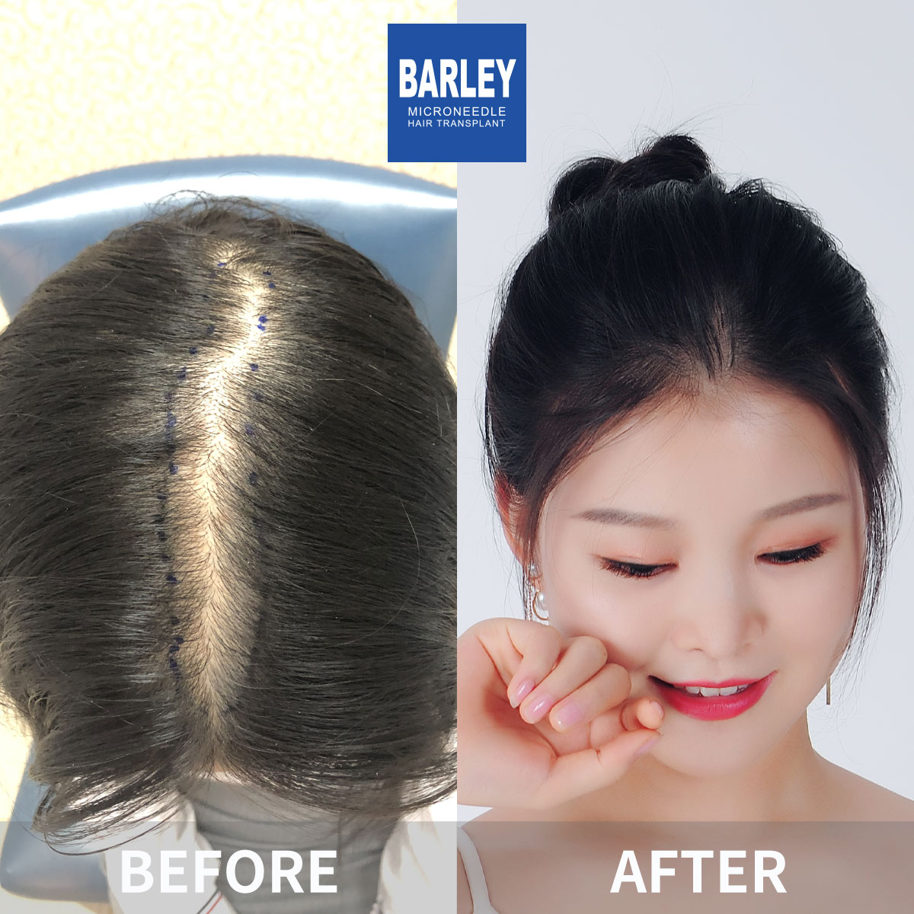
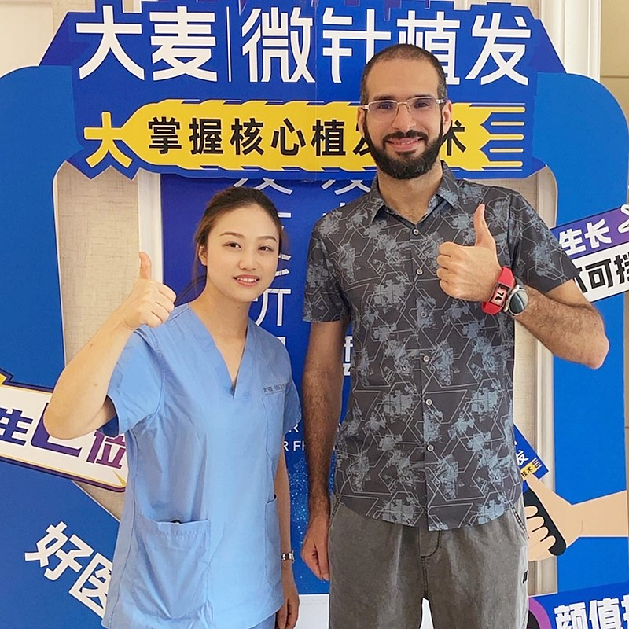
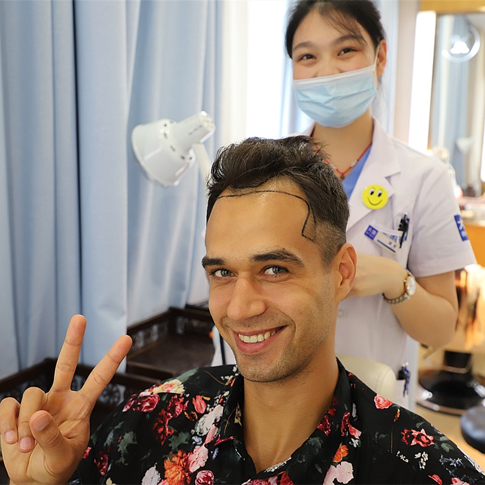

Advanced microneedle technology for 20-30% higher density with natural-looking results

Our hair thickening procedure specializes in adding density to thinning areas without compromising existing hair. Using our patented microneedle technology, we can achieve 20-30% higher density than traditional methods while maintaining completely natural hair growth patterns. Perfect for those in the early stages of hair loss who want to preserve their youthful appearance.
Precision implantation that protects existing hair follicles
Precision thickening for natural, lasting volume
3D scalp mapping to identify thinning patterns and plan optimal density distribution
Customized thickening pattern designed for your natural hair direction and density
Selective harvesting of high-quality follicular units from safe donor areas
Micro-incisions carefully placed between existing hairs to maximize density
Precision placement with patented implant pen for optimal survival and growth
Enhanced aftercare protocol including optional PRP for accelerated healing
Industry leader with proven results
Pioneer and leader in microneedle hair transplant technology since 2006
Across major cities in China, all with the same high standards
Innovative microneedle and implant pen technology for superior results
Trusted by patients from around the globe for life-changing results
Full English support for international patients throughout treatment
State-of-the-art facilities and strict safety protocols for your peace of mind
See the amazing transformations our patients have achieved





Moments captured with our satisfied patients

Posing with our medical team after successful procedure

Celebrating fantastic results with our doctors

Another satisfied patient shares their joy

Patient with our specialist before discharge

Happy patient with Dr. Chen post-treatment

Excited patient showing their new look
Hear from our satisfied patients around the world
"My crown was thinning and I was so self-conscious! Barley's hair thickening treatment gave me back the full density I had years ago! I feel like a new person!"
"The 20-30% higher density I got is incredible! My hair looks so thick and full now! The microneedle technology made all the difference! I'm so happy with the results!"
"I researched hair thickening on Bing for months before choosing Barley! The results exceeded all expectations! My hair feels thick and looks completely natural!"
"My thinning hair made me look so much older! After the thickening treatment, I have full, natural hair again! People keep asking me if I changed my diet - little do they know!"
"The hair thickening gave me back my confidence! I can wear my hair shorter now without worrying about seeing my scalp! The results are perfect - thank you Barley!"
"I had tried so many products with no luck! The hair thickening treatment at Barley finally gave me the results I wanted! My hair looks full and healthy now!"
Experience our modern and comfortable facilities

Our state-of-the-art facility

Relax in our premium lounge

Sterile and advanced
Private and professional

Comfortable post-op space

Welcoming entrance
Find answers to common questions about hair transplantation
Contact us for a free consultation
15810155700
+86 13730143529
hairtransplant@qq.com